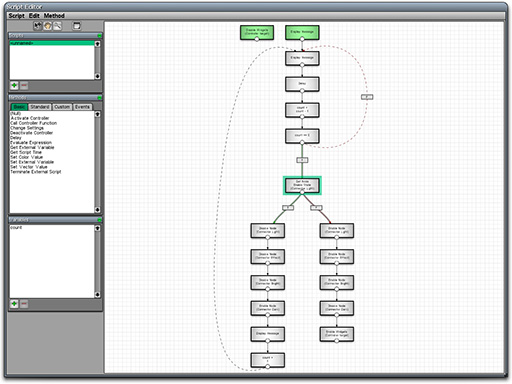
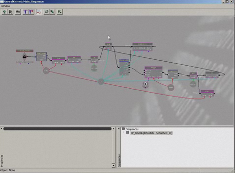

Comparison of Scripting Languages
From C4 Engine Wiki
The C4 Engine uses a graphical scripting language that displays a visual representation of the actions performed by a script. The Unreal Engine* also has a graphical scripting language called Kismet*, and this page compares the two languages.
The following screenshots show a side-by-side comparison of what scripts performing the same function in C4 (left) and Kismet (right) look like. Both scripts turn off a light source after a five-second countdown, and then turn the same light source back on after another five-second countdown. Before each countdown, a message is displayed on top of the scene saying that the light is going to be either turned on or turned off. Then during each countdown, the number of seconds remaining is displayed as a message each second until the countdown reaches zero.
This script can be found in the world Data/Tutorial/world/Lasers.wld in the panel that has a button saying “Click Me”. The script is attached to the green button item and can be accessed in the Panel Editor.
| C4 Script Editor | Unreal Kismet Editor |
|  |  |
The first important difference to note is that the C4 script does not show data flow edges in the program graph. In fact, data dependencies do not have any affect on program execution in a C4 script. The C4 scripting system was designed this way on purpose in order to simplify the visual presentation of a script. A script in C4 has a list of variables that exists separately from the program graph itself, and the values of these variables are accessible at any time. By comparison, the Kismet program graph is cluttered with many data dependency edges (the red and cyan curves in the graph), and a particular piece of data can only be accessed when it is hooked up to the right input port on an action in the script.
Another important difference is that all of the boxes in a C4 script have the same meaning: they are all actions. Additionally, all of the lines in a C4 script have the same meaning: they all represent control flow from one action to another. In contrast, the Kismet script has several different shapes that mean different things, and the lines connecting them have different meanings as well. For example, a Kismet script has a circle in the graph for every variable and constant value used in the script. There are also different shapes for events that trigger the script. (In C4, triggers are external to the script itself.)
The biggest feature of the C4 scripting language that is not available in Kismet is the ability to evaluate arbitrary expressions. In a C4 script, a single action can evaluate a complex expression involving named script variables and constant values, and the result can be stored in another variable and/or used for conditional execution of subsequent actions. In Kismet, no such functionality exists, and special actions that perform all possible comparison between two values need to be used in order to implement conditional execution. The tall box in the center of the Kismet screenshot above calculates five different boolean values representing the relationship between two inputs labeled “A” and “B”. In a C4 script, the user can enter an expression containing the one comparison that is needed, and the input values have names that represent their meanings instead of simply being called “A” and “B”.
*Unreal Engine and Kismet are trademarks or registered trademarks of Epic Games, Inc., and are used solely for editorial purposes. No endorsement or affiliation is implied by the usage of any third-party marks or brand names in this article.